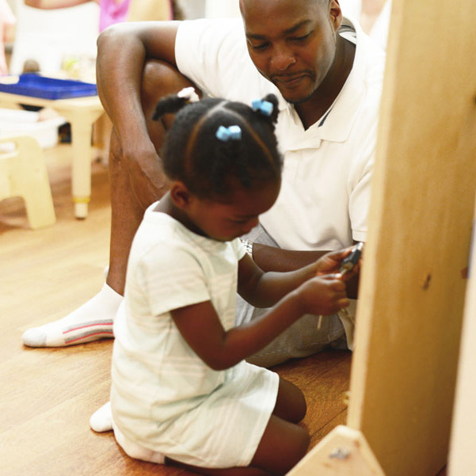

Learn how to help your child develop a love of learning.
he Nurture Center’s program is designed to assist parents and caregivers with developmentally appropriate activities to do with babies and toddlers. Our Infant and Toddler Coordinator will introduce children and adults to the Montessori philosophy and method of teaching. Adults will be bonding, exploring Montessori materials and
collaborating around a variety of topics related to child development.

Program Format
6-week sessions beginning October 2016
90-minute class, one day a week
0-36 month old children
Three 90-minute parent discussion groups
Open to dads, moms, grandparents and other caregivers
During the class children explore a carefully prepared environment, choose from the
materials provided and learn at their own pace. Caregivers take delight in children’s
exploration, observe children’s discoveries and come together for music, stories and a
community snack. Parent discussion groups allow adults to share ideas and questions
about eating, sleeping, toileting, discipline and many other topics. The Nurture Center
offers parents and caregivers an opportunity to meet other parents for sharing and
networking with one another.
Please call 212-665-1600 for more information.
Join our community, create friendships and build
a strong network of mutual support for children
and caregivers.